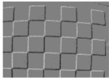
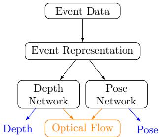

"Event cameras are bio-inspired sensors that differ from conventional frame cameras: Instead of capturing images at a fixed rate, they asynchronously measure per-pixel brightness changes, and output a stream of events that encode the time, location and sign of the brightness changes."
2022 摘要写的是 "very high dynamic range (140 dB versus 60 dB)"，但同一篇的传感器表（Table 1）里 DVS128 动态范围只有 120 dB、ATIS 是 "> 120 dB"、DAVIS346 是 143 dB；而 2020 综述又写成 "> 120 dB"。三个数字（140 / 120 / >120）放一起对不上。安全说法：事件相机动态范围通常 > 120 dB，部分传感器可到约 140 dB，远高于帧相机的约 60 dB。写课时别把 140 dB 当铁律。
⚠️ 修正 2：3 kHz 带宽对应"300 ms"是单位错误
2022 §2.2 原文："At the brighter light intensity, the DVS pixel bandwidth is about 3 kHz, equivalent to an exposure time of about 300 ms." —— 这里单位错了。3 kHz = 每秒 3000 次，对应周期 $1/3000 \approx$ 333 μs，不是 300 ms（差了 1000 倍）。正确应是"约 300 μs"。这正是"高时间分辨率 / 低延迟"那个卖点的量化来源，必须改对。
原图注（Fig. 2）： "‘Event transfer function’ from a single DVS pixel in response to sinusoidal LED stimulation. … Fig. 2b shows that, at low frequencies, the DVS pixel produces a certain number of events per cycle. Above some cutoff frequency, the variations are filtered out … and thus the number of events per cycle drops."（单像素对正弦 LED 刺激的"事件传递函数"；超过某个截止频率后变化被前端滤掉，每周期事件数下降。）
② 不同的光度传感：帧相机给灰度，事件只给"变亮/变暗"的二值变化信息；而变化既看场景亮度，也看相机与场景的相对运动。
③ 噪声与动态效应：所有视觉传感器都有噪声（光子散粒噪声、晶体管电路噪声），事件相机量化"时间对比度"的过程尤其复杂、尚未被完全刻画。
其中第 ② 条直接引出 SLAM 里最痛的问题——数据关联（data association）。2022 §3 指出：事件由"运动引起的亮度变化"产生，所以同一场景点在不同运动状态下的事件外观会完全变样；而跟踪又要在不同时间把"同一个点"的事件对上，这就非常难。下图用"同一场景、两种运动方向"把这件事画活了。

原图注（Fig. 5）： "The challenge of data association. Panels (a) and (b) show events from a scene (c) under two different motion directions: (a) diagonal and (b) up-down. … Clearly, it is not easy to establish event correspondences between (a) and (b) due to the changing appearance of the edge patterns in (c) with respect to the motion."（数据关联之难：同一场景在两种运动方向下，事件边缘图案长得完全不同，难以建立对应。）
原图注（Fig. 3）： "Several event representations (Section 3.1) of the slider depth sequence [81]. From left to right: events in space time … Event frame (brightness increment image) … Time surface … Interpolated voxel-grid … Motion-compensated event image … Reconstructed intensity image."（同一段序列的多种事件表示：时空事件、事件帧、时间面、插值体素网格、运动补偿事件图、重建强度图。）
怎么看这张图： 这是整门课里最该"扫一眼记住"的图。从左到右，事件被逐步"翻译"成越来越像普通图像的东西：左边是稀疏的彩色点云（蓝正/红负），右边是稠密的重建灰度图。记住一句话——越往右越方便套传统 CV 工具，但越往右越丢掉事件的"异步/稀疏"优势。后面四类 SLAM 方法，几乎都在"用哪种表示"上做文章。
① 特征法（§3）：从事件提取点/线特征并跟踪，再做 BA。优化目标为重投影误差（Eq.(9)(10)）：$\displaystyle T_{m,n},X=\arg\min\sum_{(f_{m,i},f_{n,j})\in\mathcal{F}}\|\mathbf{x}_{f_{m,i}}-\mathbf{x}_{f_{n,j}}^m\|^2$。快、省算力，但纹理缺失场景直接跪。
② 直接法（§4）：不做显式特征，直接对齐事件/边缘图。事件-图像对齐（Eq.(11)(12)）最小化"观测亮度变化 vs 图像预测亮度变化"的差；事件表示对齐（Eq.(13)(14)）最小化两帧事件图差异。适合纹理缺失，但中等运动下受限。
③ 运动补偿法（§5）：以事件帧为主表示，通过"把事件 warp 到参考帧并对齐"来估计运动（Eq.(15)：$\displaystyle T_{ref,k},X=\arg\min_{T_{ref,k}} g_a(H_{mc}(\mathcal{E}))$）。分 CMax（对比度最大化）、DMin（离散度最小化）、概率模型三类。能靠长窗口累积保持边缘，但——见下方"事件塌缩"。
这是运动补偿法的专属坑：在某些运动下，优化会把事件"压"到目标空间里的一条线或一个点上（collapse to a line or a point），目标函数反而拿到比真解更大的值，于是收敛到坏解。缓解办法有：把运动参数初始化在真解附近、对事件做白化（whitening）、用散度/面积形变等度量做正则。它直接导致运动补偿法"基本只敢用在旋转运动"上。

原图注（Fig. 7）： "Diagrams of two typical types of deep learning methods. Self-supervised methods estimate depth and camera pose to recover optical flow as the training signal (in orange), while supervised methods estimate the depth and camera pose with ground truth separately (in blue)."（两类深度学习方法示意：自监督用光流作训练信号（橙），有监督用真值分别估深度与位姿（蓝）。）
2020 §8.2.1 在"神经表示"里明确点名了 3DGS："3D Gaussian Splatting (Kerbl et al., 2023) achieves real-time rendering, which is a promising future direction for the realtime mapping module in the event-based vSLAM methods."——即把 3DGS 的实时渲染当作事件 SLAM"实时建图模块"的潜在未来方向。这正好把上一节（0015）的 3DGS 和本节事件 SLAM 接上了线。
互动判断 1
关于事件相机的"高动态范围"，下面哪句最诚实？
互动判断 2
"事件塌缩（event collapse）"是指事件太多把显存撑爆？
课后练习
写出事件生成模型的触发条件 $\Delta L = p_k C$，并写出其线性化近似 $\Delta L \approx -\nabla L\cdot\mathbf{v}\Delta t$。解释"为什么边缘平行于运动方向时不产生事件"。
展开查看答案
三轴：问题维度（2D→3D）、运动类型（约束→6-DOF 自由）、场景类型（人工高对比→自然场景）。大多方法为了降复杂度加了 RGB-D/强度图或只做旋转运动；只有 [25] Kim、[26] Rebecq 两篇不依赖额外传感、用纯事件解决了最一般的 3D 自然场景，所以被单独点名。一旦加传感器，帧相机的延迟/运动模糊瓶颈又被带回。
2020 §8.2 列了哪 4 个未来方向？其中如何点名 3D Gaussian Splatting？
展开查看答案
四个方向：Representation（表示）、Robustness（鲁棒性/回环/重定位）、Multi-sensor & Benchmark（多传感器与基准）、Foundation Model（基础模型）。在 Representation→Neural Representation 里明确写：事件版 NeRF 已优于帧版 NeRF，而 "3D Gaussian Splatting achieves real-time rendering, which is a promising future direction for the realtime mapping module in the event-based vSLAM methods"——把 3DGS 实时渲染当作事件 SLAM 实时建图的潜在方向。
修正题：2022 原文 "3 kHz bandwidth … equivalent to an exposure time of about 300 ms" 哪里错了？给出正确数量级及理由。
展开查看答案